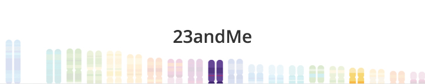
As far as I've known, my ancestry was a mix of Chinese and Vietnamese East-Asian. Wanting to discover my true genetic roots, I was eager to try out 23andMe to have clearer understanding of my background. This post will walk-through my experience using 23andMe as well as other similar tools.
First, I'd like to point out a few hesitations I had doing this.- Price. At $99 for Ancestry kit and $199 for Ancestry + Health kit, this is pretty pricey for just a 'curiosity' I had about my background
- FDA regulations. There had been concerns of what kind of data 23andMe was releasing to their customers... “potential health consequences that could result from false positive or false negative assessments for high-risk indications"
- East Asian data. 23andMe seemed to categorize all East Asians into either Chinese, Korean, or Japanese. The result is that East Asians get less comprehensive reports compared to people of European ancestry
In the end, I decided to jump the gun and thought it'd be a good learning experience. I've opted for the Ancestry kit over the Ancestry + Health because I decided that it’d be a better learning experience to use the raw data to learn more about my health using other tools.
THE PROCESS/TIMELINE
June 27th - Ordered Kit
June 28th - Kit Shipped
June 29th - Kit Received
June 30th - Kit Shipped back to 23andMe
July 7th - Kit Received by 23andMe
July 8th - Receiving and Quality Inspection Complete
July 30th - DNA Extraction Complete
August 1st- DNA Analysis Complete
August 1st - Quality Review Complete
August 1st - Initial Raw Data Processing Complete
August 4th - Computation and Report Generation Complete
MY 23ANDME ANCESTRY REPORT
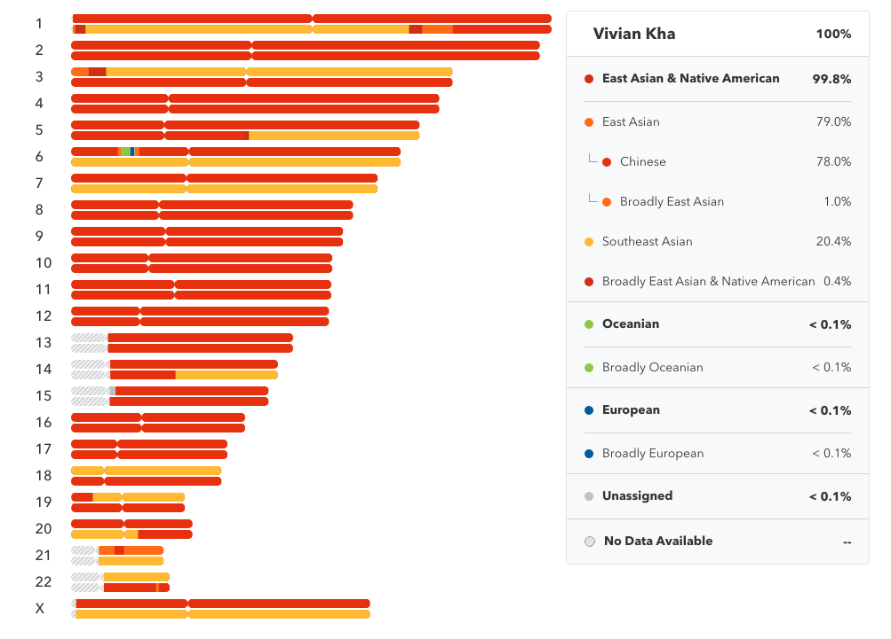
This first diagram is the bulk of the ancestry report. It describes my ancestry based on genetic makeup. As you can see, the East Asian category isn’t very well defined. As far as I know, only Chinese, Japanese, Korea, Yakut, and Mongolian ancestries are currently categorized. I read somewhere that anything below 1% could just be noise so it will be safe to assume I’m not European.
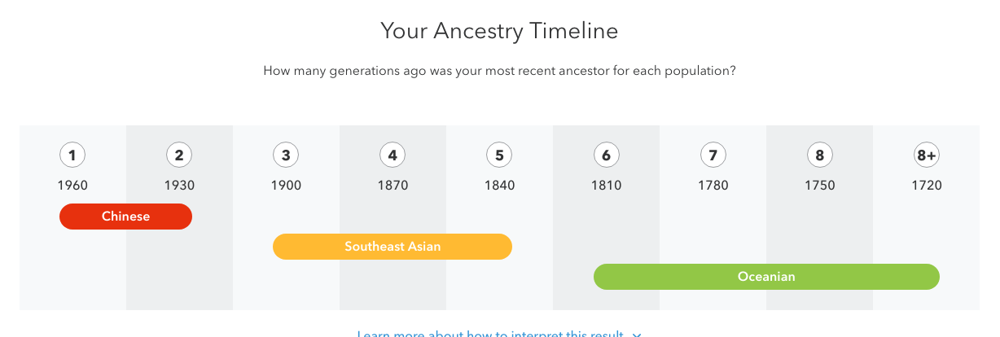
This next tool is the Ancestry Timeline. It tells me about my ancestor’s ancestry, categorized by generations and time period. For the ‘Oceanian’ part, it says :
“You most likely had a fourth great-grandparent, fifth great-grandparent, sixth great-grandparent, or seventh great (or greater) grandparent who was 100% Oceanian. This person was likely born between 1720 and 1810.”
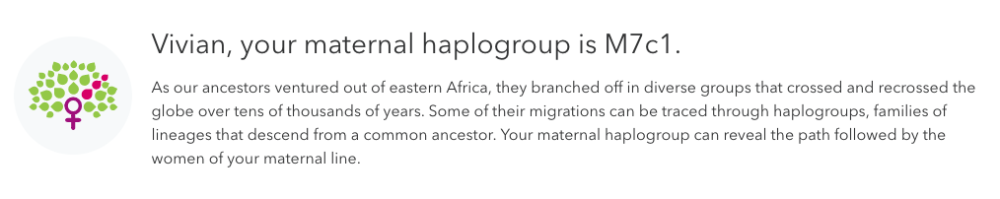
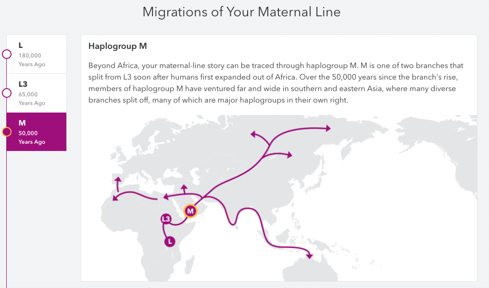
Next, we have some information about my ‘Maternal Line’. This is the line of women that I have descended from, tracing back to Eastern Africa. It shows the paths that are traced back and which branches my ancestors came from. Each of these diverse groups are labeled and according to this, my haplogroup is ‘M7c1’. There isn’t much info I can gather from this since I don’t know much about haplogroups but I thought it was cool learning about my ancestors’ migration paths.
Another tool that comes with the Ancestry kit is the Relative finder where you can find a list of people that are somewhat related to you, from ‘Close Relatives’ up to ‘Sixth Cousins’ and beyond.
You can also download your ‘Raw Data’ and use it to input into other tools like below. To do this, go to Tools > Browse Raw Data > Download.
DNA.LAND (FREE)
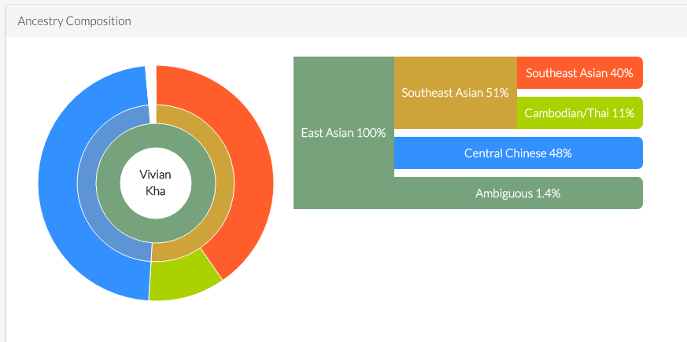
DNA.LAND basically shows me that I’m full Asian as well...but with different makeup! It seems as if DNA.LAND has a lot more data on Asians as it can distinguish Cambodian/Thai as well as Central Chinese from other Chinese categories.
DNA.LAND also has some wellness/physical traits below which I found somewhat accurate!
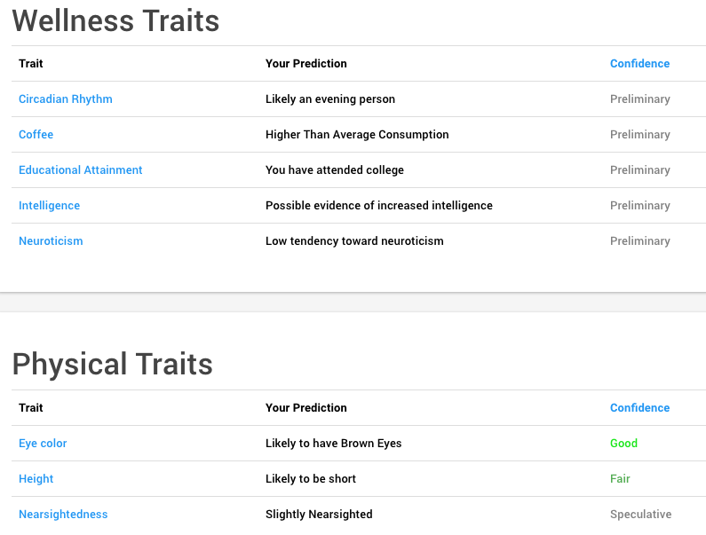
MyHeritage (FREE)
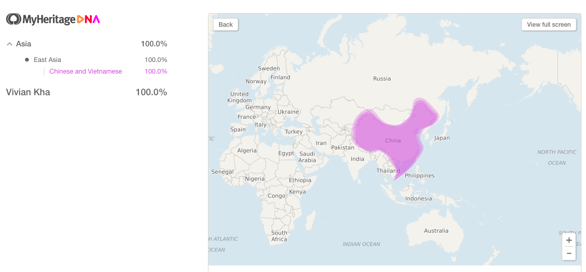
MyHeritage is a newer tool with less data and therefore is a lot more vague. I thought it’d be interesting trying the new service anyway.
GEDmatch (FREE)
GEDmatch is a pretty popular tool. However, I think it is a lot more technical and less user-friendly. This tool is great for comparing DNA one-to-one, or one-to-many from their database. I can’t show a snapshot of what this looks like because it also has other peoples’ information on it.
One of the tools that I liked from GEDmatch was the ‘Eye Color Predictor’.
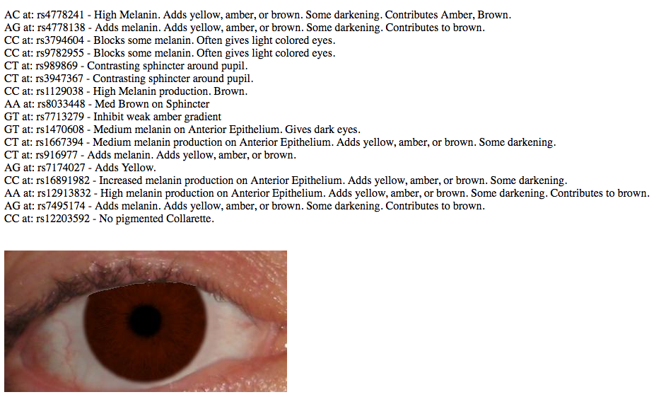
Not only does it tell you the color that it thinks your eye is, but it also tells you exactly which part of your DNA contributes to it.
Another tool I enjoyed was ‘Are your parents related?’. It works by comparing your base pairs. I can tell you that my parents are not related but Joffrey, Myrcella, and Tommen definitely would’ve gotten some red flags.
WeGene (FREE)
I was particularly excited to try out WeGene for another take on my ancestry results since they are a Chinese company, and they might have more data on Asian DNA.
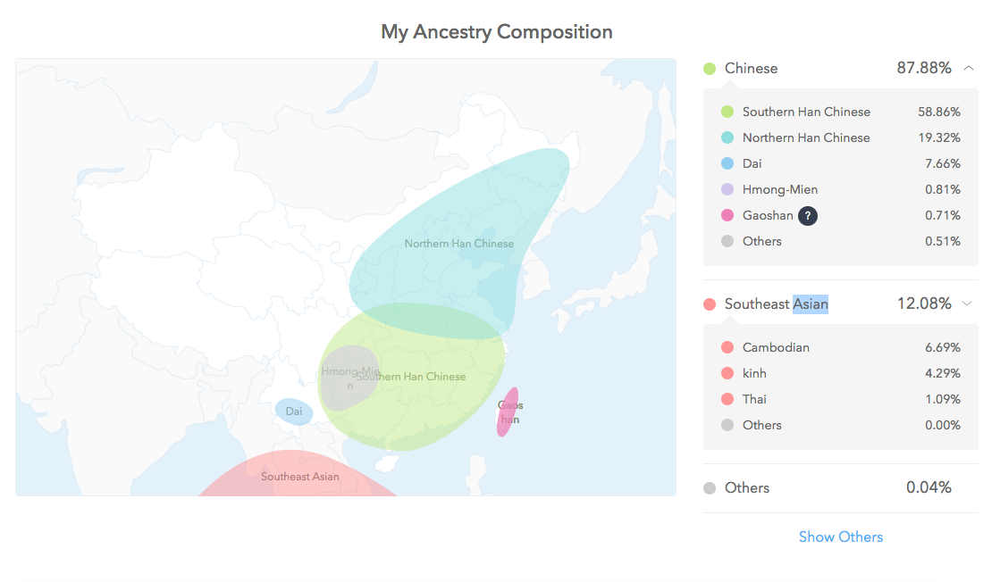
My above results seem pretty consistent with the other tools: mostly Chinese, with some Southeast Asian. I was surprised at how detailed the Chinese and Southeast Asian categories were.
Note: ‘kinh’ is Vietnamese
I also noticed that on their Chinese website, there are more reports (Health, Fitness, Metabolism, etc) that are not available on the English website. I found these reports interesting so I thought I’d share a few (even if some Google translations might be wrong).
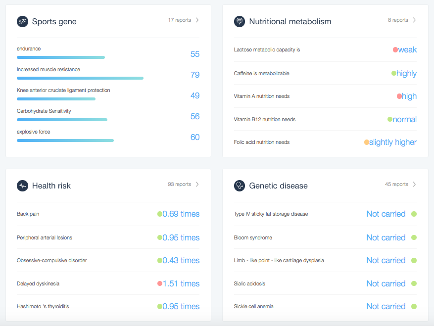
I really enjoyed WeGene’s reports as I felt they are more geared towards Asians. I also think the health reports on the Chinese website are very detailed although there are probably some FDA regulations on some of that information (maybe why they are only on the Chinese site).
Promethease ($5)
Promethease is known as the favorite data analyzing tool (at least from the /r/23andme perspective). It is heavily health and disease focused (no ancestry). The difference with Promethease is that you have to pay $5 for the report to be generated. Your report is hosted on their site for 45 days, but you are emailed the HTML files to be able to render the report locally on your computer anytime after the 45 days is up.
There is A LOT to see on Promethease and it is slightly more technical and less user friendly than other tools, but basically it will tell you traits that come up from analyzing your data. Here is a sample:
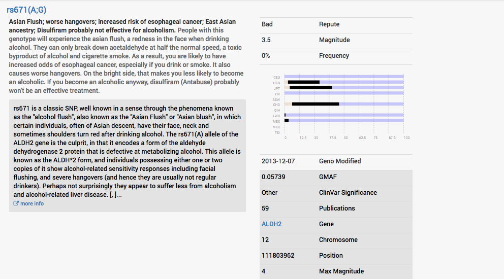
Basically, it’s saying I have Asian Flush, which I am well aware of, thanks.
You can also sort by categories, magnitude, and good/bad traits. I feel like there is just so information on Promethease , you can spend hours looking through your data. I thought it was definitely worth the $5!
TL;DR
I had a lot of fun doing the 23andMe ancestry kit despite knowing that my report wouldn't be as comprehensive as someone with a European ancestry. Any genetic testing kit would be a great self-discovery experience of your genetic makeup, on top of you getting to contribute to more scientific discoveries! Just make sure you have realistic expectations instead of hoping to find some new crazy discovery about yourself. And make sure to be on the lookout for 23andMe sales on holidays!
← Back to Blogs